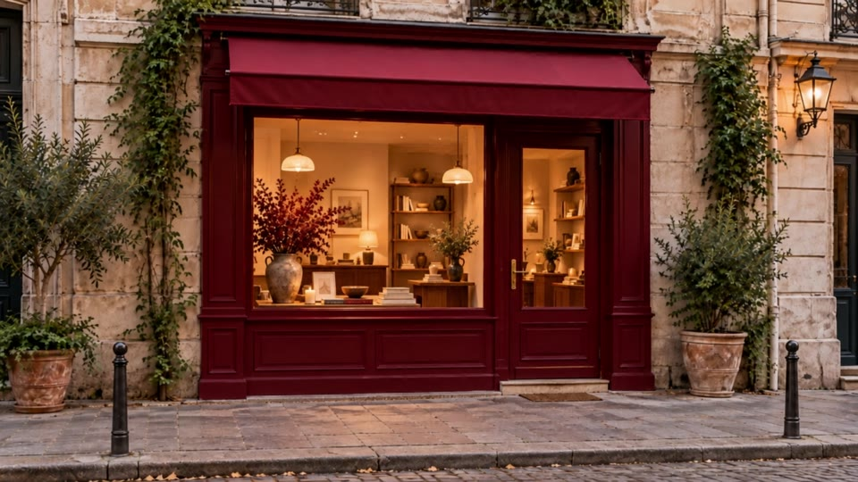
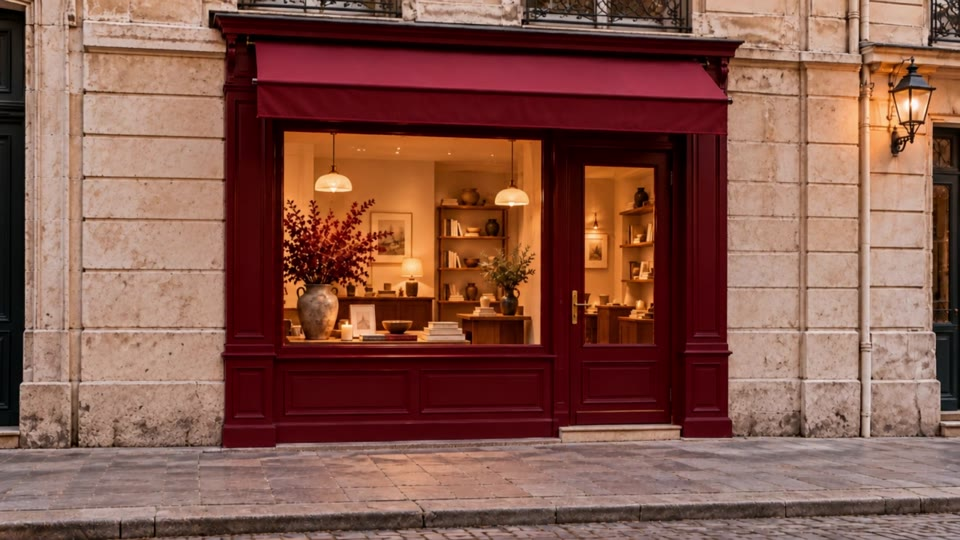

EDIÇÃO · CAPTAÇÃO · IA GENERATIVA
Reels, TikTok e vídeos horizontais editados pra prender nos primeiros 3 segundos — com captação humana e efeitos de IA que seu concorrente ainda não tem.
01 /
O formato que mais vende hoje. Editado pra parar o dedo.
Reels, TikTok e Shorts com gancho forte, ritmo rápido, legenda animada e trilha certa. Você manda o material bruto (ou eu gravo), eu entrego pronto pra postar.
EDIÇÃO + IA GENERATIVA →
Alguns exemplos do que entra num corte. Passe o mouse pra pausar.
Vou até você e gravo o conteúdo orgânico: bastidores, depoimentos, produto, rotina. Gente de verdade, que gera confiança — e depois edito tudo.
YouTube, institucional, aftermovie de evento e VSL. Corte mais longo, mesma obsessão por ritmo.
FORMATOS /
Do YouTube ao Reels, cada vídeo sai enquadrado pro lugar onde vai ser visto.
Horizontal 16:9
YouTube · VSL · institucional
Quadrado 1:1
Feed · anúncios
Carrossel 4:5
Carrossel do Instagram
Vertical 9:16
Reels · TikTok · Shorts
02 /
O efeito que faz a pessoa voltar o vídeo pra ver de novo.
Uso IA generativa como mágica para seu vídeo, não como muleta: cenários que não existem, transições impossíveis, objetos que somem, produto ganhando vida. Entra quando deixa o vídeo melhor — e sem cara de “vídeo de IA”.

Antes
O material bruto, como foi gravado.

Depois
Plantas, trepadeiras e postes removidos com IA, sem regravar nada.
Experimento
Teste autoral — mostra o que é possível pro seu vídeo.
Entrega rápida
Primeira versão em até 48h. Você posta enquanto o assunto ainda está quente.
Pronto pra postar
Formato certo, legenda, capa e sugestão de texto. Zero trabalho do seu lado.
Revisões inclusas
2 rodadas de ajuste por vídeo, sem cobrança extra.
IA na medida
Efeito impossível quando valoriza, edição limpa quando é o que precisa ser feito.
03 /
IA GENERATIVA INCLUSA EM TODOS
ARQUIVO_02 · MAIS ESCOLHIDO
Responsa
R$ 1.450 /mês
8 Reels por mês
Edição com IA generativa
ARQUIVO_03
Avulso
R$ 250 /vídeo
1 Reel
Edição com IA generativa
Ideal pra testar antes do mensal
RESPONDO NO MESMO DIA
Bora fazer seu vídeo→